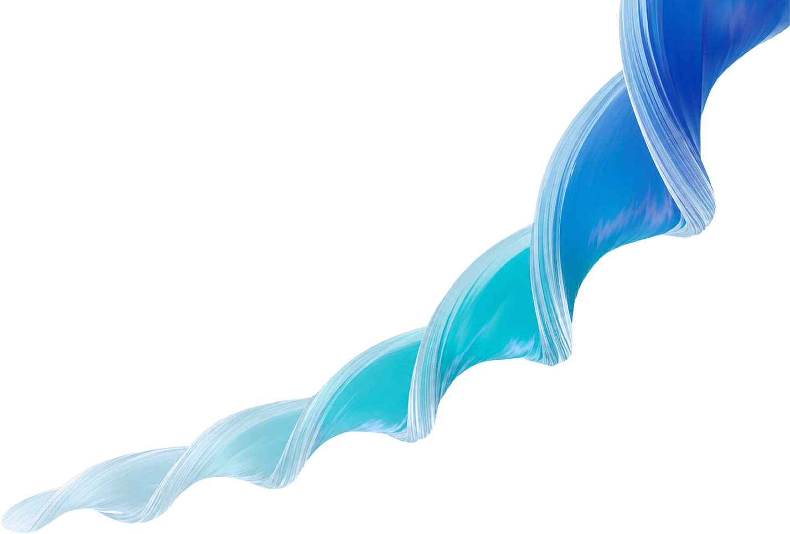
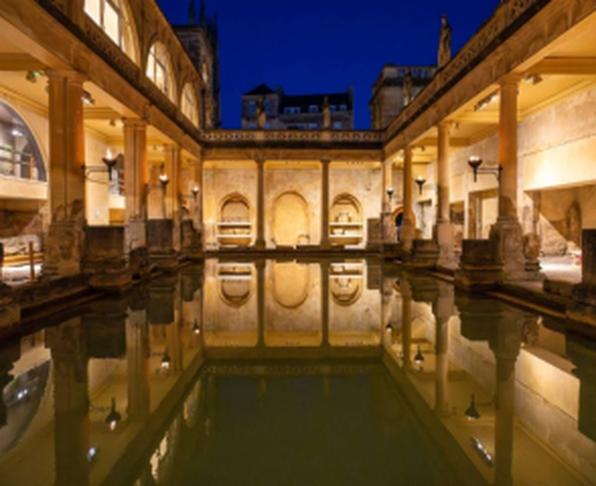
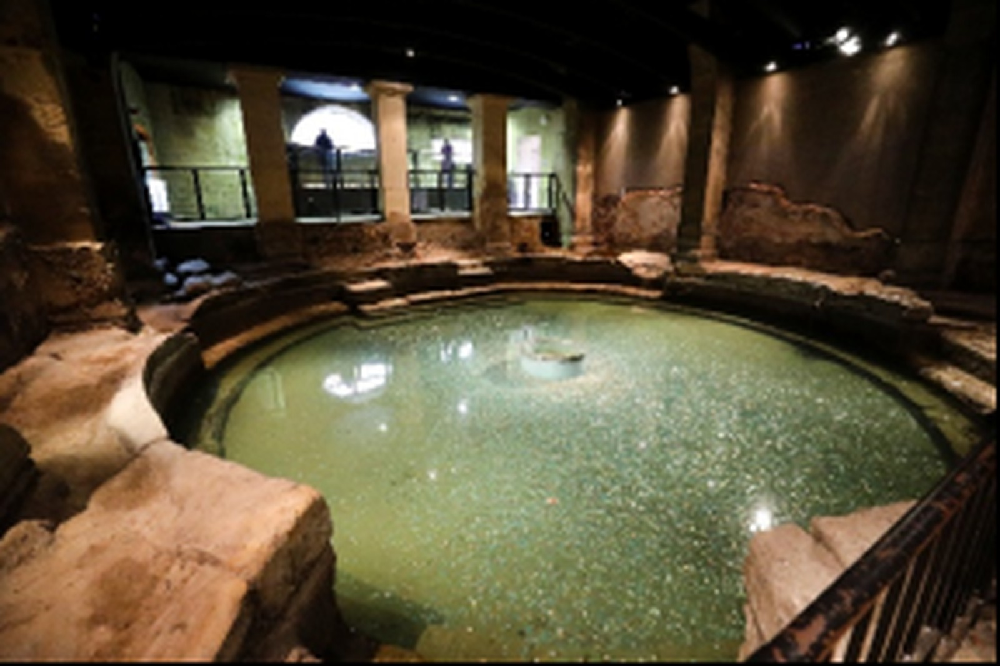
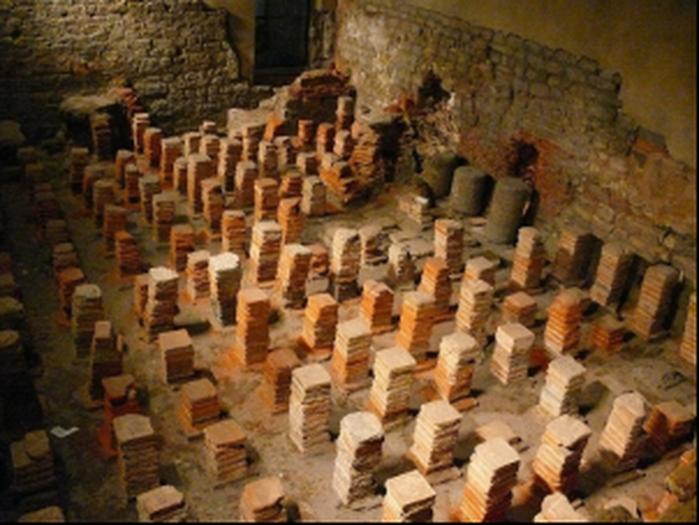
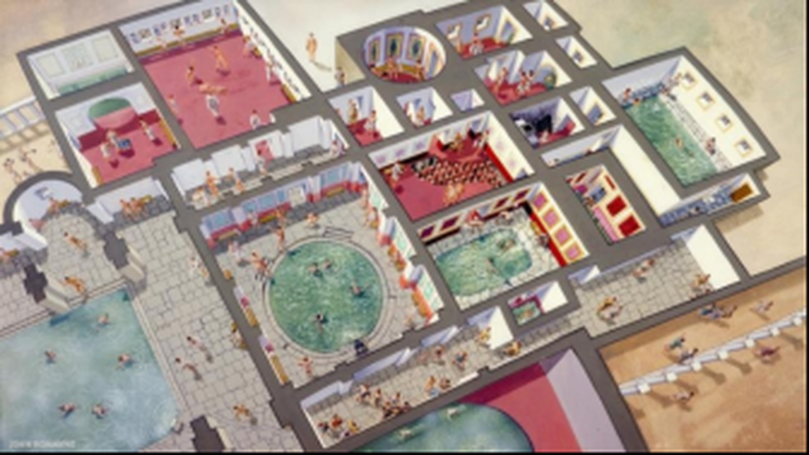
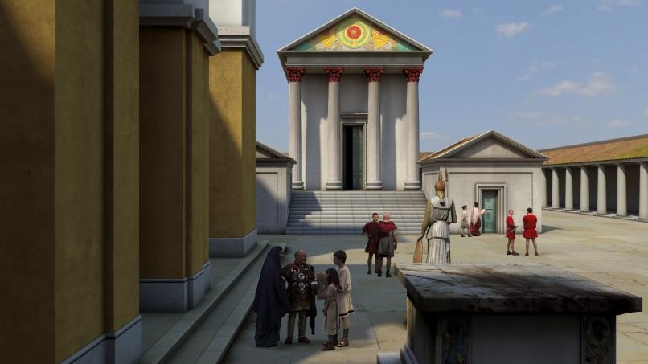
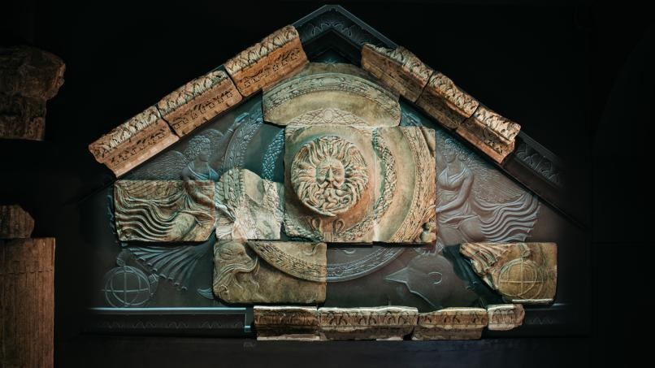
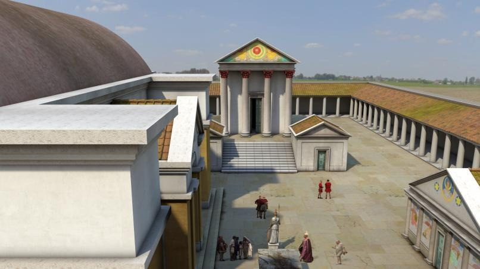
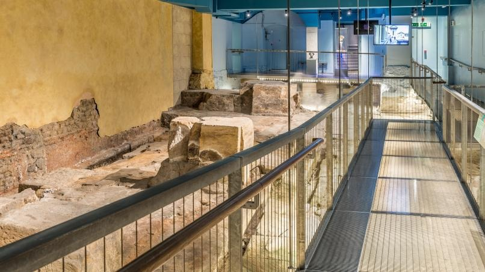

Personalized Treatment
AI empowers healthcare providers to deliver personalized treatment plans
Healthcare
Effectiveness

With AI-powered diagnostics, we aim to enhance the accuracy and efficiency of disease detection
( ) REDEFININGAI empowers healthcare providers to deliver personalized treatment plans

大浴场 ★ 4.8
圣泉核心
探索巴斯
巴斯罗马浴场建筑群规模宏大，完整保留了古罗马人独特的沐浴传统。从大浴场的温水，到拉科尼库姆的干热，再到圆形浴池的冷水浸浴，都值得慢慢走完。

圆形浴池 ★ 4.2
冷水浸浴

拉科尼库姆 ★ 4.7
高温干室

西浴场 ★ 4.5
地暖柱墩
01 / 03
神圣之泉位于这座古迹的核心地带。
许多在罗马时期投进泉中的供品，如今都能在博物馆的馆藏中看到。
这眼泉位于苏利斯·密涅瓦神庙的庭院内，是罗马浴场的水源。一条伸入泉中的土堤表明，早在罗马神庙和浴场建成之前，这里就已经是一个重要的祭祀中心。罗马工程师们在橡木桩基上，用铅衬里，围绕泉眼建造了一座不规则的石室。
起初，这个蓄水池是神庙庭院一角的一个露天水池，但在公元2世纪，它被封闭在一座拱顶低矮、光线昏暗的建筑内，周围环绕着雕像和柱子，更添几分神秘气息。在整个罗马时期，人们都会向泉水中投掷供品。最终，这座拱顶建筑坍塌并坠入泉眼之中，时间很可能是在6世纪或7世纪。那些两千年前沉入泥中的橡木桩，至今仍为泉眼提供着稳固的基础。
“国王浴场”修建于12世纪，以罗马温泉建筑的下部墙体作为地基。浴场内设有供沐浴者坐卧的壁龛，沐浴者可在此将身体浸入水中直至颈部。浴场南侧有一张被称为“浴场主管椅”的座椅，该座椅于17世纪被捐赠。
尽管在18世纪建造“大泵房”以及随后19世纪的开发过程中，国王浴场曾遭到改建和侵占，但它仍一直作为疗养浴场使用，直至20世纪中叶。浴场上方矗立着布拉杜德国王的雕像，这位传说中的探险家发现了这里的温泉，并建立了巴斯城。
这条宏伟的罗马排水渠将圣泉和大浴场的水引流至埃文河。排水渠足够宽敞，人们可以顺着这条排水渠一路走下去，至今它仍履行着修建它的初衷。与之相连的还有一条排水渠，负责排放浴场东侧区域的积水，该渠内壁曾铺有木板，这些木板至今仍保留在那里。在排水渠中曾出土过一些重要的文物，包括一组34颗宝石和一张神秘的锡制面具。
供奉苏利斯・密涅瓦女神的神庙是阿奎苏利斯的祭祀中心，神庙庭院则是环绕神庙的神圣空间。

巴斯神庙采用古典风格建造，这在不列颠地区十分罕见，已知真正意义上的古典神庙仅有另一座——科尔切斯特的克劳狄乌斯神庙。神庙始建于公元1世纪晚期。巴斯神庙修建在高出周边庭院两米多的台基之上，需要登上一段台阶方可抵达。四根巨大的带凹槽科林斯立柱，支撑起上方的雕带与装饰华丽的三角楣。立柱后方有一扇大门，通向安放女神祭祀神像的内殿地下室。这间内殿没有窗户，光线昏暗；唯一光源来自大门射入的光线，以及祭祀神像前方燃烧的神庙圣火。
公元2世纪晚期，神庙经历改造：增设小型侧礼拜堂，并在神庙外围修建环形回廊。这次改建与圣泉被纳入新建筑围护是同一时期，这或许反映出当地祭祀仪式发生了改变。

直至公元4世纪晚期，神庙始终是祭祀朝拜的核心。随着基督教势力不断壮大，古老的异教信仰逐渐被边缘化。公元391年，狄奥多西皇帝下令关闭罗马帝国境内所有异教神庙。神庙日渐破败，最终坍塌。三角楣上部分雕刻石块被二次利用，用作庭院铺路石板；正是这些机缘巧合留存下来的石料，帮助我们还原这座罗马不列颠地区最杰出宗教建筑的原貌。

神庙庭院是举行祭祀与献祭的场所，各类仪式围绕神庙正前方的巨型祭坛开展，祭坛是整套祭祀活动的中心。庭院四周由带柱廊的围墙环绕。庭院一角便是圣泉，源源不断涌出温泉，足以供给南侧规模宏大的浴场建筑群。庭院北侧建有一座建筑，因其外立面装饰被称为 “四季殿”。庭院内还摆放着大量由朝拜者供奉在神庙周边的祭坛。

神庙庭院是举行祭祀与献祭的场所，各类仪式围绕神庙正前方的巨型祭坛开展，祭坛是整套祭祀活动的中心。庭院四周由带柱廊的围墙环绕。庭院一角便是圣泉，源源不断涌出温泉，足以供给南侧规模宏大的浴场建筑群。
罗马浴场出土了数千件前罗马及罗马不列颠时期的考古文物。两千年以来，巴斯这座名为“阿奎苏利斯”的温泉圣地历经沧桑，这些文物便是最好的见证。
在这里，你将看到三件馆内最具代表性的文物：苏利斯・密涅瓦女神鎏金青铜头像、神庙山墙戈耳工浮雕，还有珍贵的罗马诅咒牌。既有宏大的神祇祭祀雕像，也留存着普通老百姓真实的喜怒哀乐，跟随文物，读懂古罗马人在巴斯的信仰与生活。